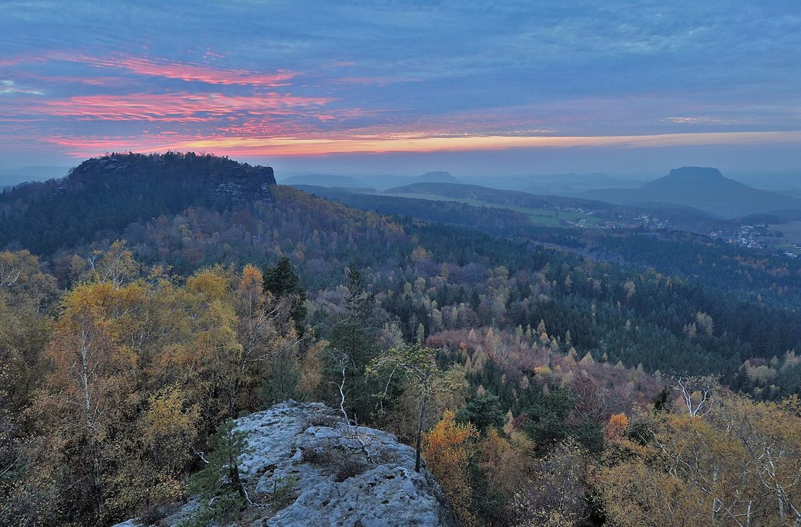

Découverte de la Suisse Saxonne : Un Joyau Naturel en Allemagne

La Suisse Saxonne, située à l'est de l'Allemagne près de Dresde, est une destination idéale pour les amoureux de la nature et les randonneurs. Cette région offre des paysages spectaculaires, des formations rocheuses uniques et des villages pittoresques. Voici un guide pour vous aider à explorer ce joyau naturel.
Comment s'y rendre ?
La Suisse Saxonne est facilement accessible depuis Dresde, qui dispose d'un aéroport international. Vous pouvez également rejoindre la région en train ou en voiture. Depuis Dresde, des trains régionaux desservent les principales villes de la région, comme Bad Schandau et Rathen. Si vous préférez la voiture, les routes sont bien entretenues et offrent des vues magnifiques.
Quand visiter ?
La meilleure période pour visiter la Suisse Saxonne est de mai à octobre. Le printemps et l'été offrent des températures agréables et une nature verdoyante, tandis qu'en automne, les feuillages colorés rendent les paysages encore plus enchanteurs. L'hiver peut être froid, mais il offre une expérience unique avec des formations rocheuses enneigées.
Les incontournables
Le Basteibrücke
Ce pont en pierre offre une vue imprenable sur les formations rocheuses et la vallée de l'Elbe. Situé à proximité de Rathen, c'est un point de départ idéal pour des randonnées.
La Festung Königstein
Cette forteresse historique perchée sur un plateau rocheux offre une vue panoramique sur la région. Elle abrite également un musée intéressant et des expositions.
Le Schloss Pillnitz
Ce château baroque situé sur les rives de l'Elbe est entouré de jardins magnifiques. Il est accessible en bateau depuis Dresde, ce qui en fait une excursion agréable.
Le Malerweg
Ce sentier de randonnée de 112 kilomètres traverse les paysages les plus spectaculaires de la région. Vous pouvez également parcourir des sections plus courtes si vous préférez.
Où manger ?
La cuisine de la Suisse Saxonne est influencée par les traditions allemandes et tchèques. Ne manquez pas de goûter au 'Sächsischer Sauerbraten', un rôti de bœuf mariné dans du vinaigre et des épices, ou au 'Leipziger Allerlei', un plat de légumes mélangés souvent accompagné de crevettes. Les cafés et restaurants locaux proposent également des pâtisseries délicieuses, comme le 'Dresdner Eierschecke', une sorte de gâteau au fromage.
Conseils pratiques
Portez des chaussures de randonnée confortables, car les sentiers peuvent être rocailleux et escarpés. N'oubliez pas votre appareil photo pour capturer les vues spectaculaires et emportez une bouteille d'eau pour rester hydraté. Si vous voyagez en été, prévoyez également de la crème solaire et un chapeau pour vous protéger du soleil.
La Suisse Saxonne est une destination qui offre quelque chose pour tout le monde, que vous soyez un randonneur chevronné ou simplement à la recherche de paisibles paysages. Avec ses formations rocheuses majestueuses, ses forteresses historiques et sa délicieuse cuisine, cette région vous laissera des souvenirs inoubliables.
Haiktec
- Boostez Vos Ventes sur Etsy : 7 Étapes Simples pour Augmenter Votre Visibilité et Votre Chiffre d'Affaires
- Planificateur de Voyage en NRW : Budget & Itinéraire pour Explorateurs Urbains
- Le Guide Essentiel des Alpes Bavaroises : 7 Itinéraires Incontournables pour Découvrir les Trésors Cachés
Text mit KI erstellt und automatisch geprueft.